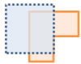
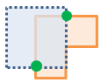
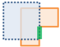
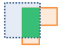

การซ้อนทับชั้นข้อมูล
การซ้อนทับชั้นข้อมูล คือการผสมผสานชั้นข้อมูล 2 ชั้น หรือมากกว่านั้นให้เหลือเพียงชั้นข้อมูลเดียว การซ้อนทับชั้นข้อมูล คือ การอ่านข้อมูลผ่านแผนที่หลายๆ ชั้นและสร้างแผนที่เดี่ยวขึ้นมาใหม่ โดยแผนที่ใหม่นี้จะมีข้อมูลและรายละเอียดของแผนที่ทุกๆ ชั้น การซ้อนทับเป็นมากกว่าการรวมข้อมูลเข้าด้วยกัน ข้อมูลคุณลักษณะทั้งหมดของทุกๆ ฟีทเจอร์จะถูกปรากฎในชั้นข้อมูลผลลัพธ์ด้วย การซ้อนทับถูกใช้เพื่อค้นหาคำตอบให้แก่คำถามพื้นฐานที่สุดทางภูมิศาสตร์ "อะไรอยู่เหนืออะไร?" ตัวอย่างเช่น:
- พื้นที่ใดบ้างที่ถูกน้ำท่วมในช่วง 100 ปีที่ผ่านมา? (การตั้งคำถามต้องมีการระบุขอบเขต ระยะเวลา ตำแหน่งที่ตั้งให้ชัดเจน )
- มีถนนสายใดบ้างที่อยู่ในเมืองนี้?
- ดินประเภทนี้ มีการใช้ที่ดินอย่างไรบ้าง?
- มีอะไรหลงเหลืออยู่ในหลุมของทหารที่ถูกทิ้งร้างบ้าง?
หาก ใช้ขอบแขตแผนที่ปัจจุบันถูกเลือก จะมีเพียงฟีทเจอร์ที่อยู่ภายในชั้นข้อมูลที่ต้องการซ้อนทับกันที่มองเห็นภายในขอบเขตแผนที่ปัจจุบันเท่านั้นที่ถูกนำมาซ้อนทับกัน หากไม่ถูกเลือก ทุกๆฟีทเจอร์ในทั้งสองชั้นข้อมูลจะถูกซ้อนทับกัน แม้ว่าฟีทเจอร์นั้นจะอยู่นอกขอบเขตแผนที่ปัจจุบัน
เลือกชั้นข้อมูลซ้อนทับ
ชั้นข้อมูลที่จะซ้อนทับกับชั้นข้อมูลวิเคราะห์
เลือกวิธีการซ้อนทับ
วิธีการซ้อนทับระบุวิธีที่สองชั้นข้อมูลจะรวมกัน
- การหาพื้นที่ร่วมกัน—ผลลัพธ์ที่ได้จะเป็นฟีทเจอร์ของชั้นข้อมูลซ้อนทับที่มีพื้นที่ร่วมกับฟีทเจอร์ของชั้นข้อมูลวิเคราะห์ เมื่อมีการหาพื้นที่ร่วมกันของข้อมูลเส้นหรือข้อมูลพื้นที่ คุณจะต้องเลือกประเภทของข้อมูลผลลัพธ์ที่คุณต้องการ
จุดพร้อมกับจุด
จุดพร้อมกับเส้น
จุดพร้อมกับพื้นที่


เส้นพร้อมกับเส้น


เส้นพร้อมกับพื้นที่


พื้นที่พร้อมกับพื้นที่




- ยูเนียน—ผลลัพธ์ที่ได้เป็นการรวมฟีทเจอร์จากทั้งสองชั้นข้อมูล ยูเนียนเป็นวิธีการเดียวที่ทำได้ หากทั้งสองชั้นข้อมูลประกอบด้วยฟีทเจอร์ที่เป็นพื้นที่
- ลบ—ผลลัพธ์ที่ได้จะประกอบด้วยฟีทเจอร์ของชั้นข้อมูลซ้อนทับที่ไม่มีส่วนซ้อนทับกับฟีทเจอร์พื้นที่ของชั้นข้อมูลวิเคราะห์ ชั้นข้อมูลซ้อนทับอาจประกอบด้วยฟีทเจอร์ประเภทพื้นที่ เส้น หรือจุด
หาก ใช้ขอบแขตแผนที่ปัจจุบันถูกเลือก จะมีเพียงฟีทเจอร์ที่อยู่ภายในชั้นข้อมูลที่ต้องการซ้อนทับกันที่มองเห็นภายในขอบเขตแผนที่ปัจจุบันเท่านั้นที่ถูกนำมาซ้อนทับกัน หากไม่ถูกเลือก ทุกๆฟีทเจอร์ในทั้งสองชั้นข้อมูลจะถูกซ้อนทับกัน แม้ว่าฟีทเจอร์นั้นจะอยู่นอกขอบเขตแผนที่ปัจจุบัน
ชื่อชั้นข้อมูลผลลัพธ์
ชื่อนี้เป็นชื่อของชั้นข้อมูลที่จะถูกสร้างอยู่ใน เนื้อหาของฉันและถูกเพิ่มเข้าไปบนแผนที่ จะประกอบด้วยฟีทเจอร์ประเภทเดียวกับชั้นข้อมูลซ้อนทับ (พื้นที่ เส้นหรือจุด) ชื่อตั้งต้นอิงจากวิธีการซ้อนทับและชื่อชั้นข้อมูลวิเคราะห์ หากชั้นข้อมูลนั้นมีอยู่แล้ว คุณจะถูกถามเพื่อให้ยึนยัน หากคุณต้องการจัดเก็บทับไฟล์เก่า
โดยใช้ บันทึกผลลัพธ์ใน กล่องรายการตัวเลือกแบบดึงลง คุณสามารถกำหนดชื่อของโฟลเดอร์ใน เนื้อหาของฉัน ซึ่งเป็นที่จัดเก็ผลลัพธ์